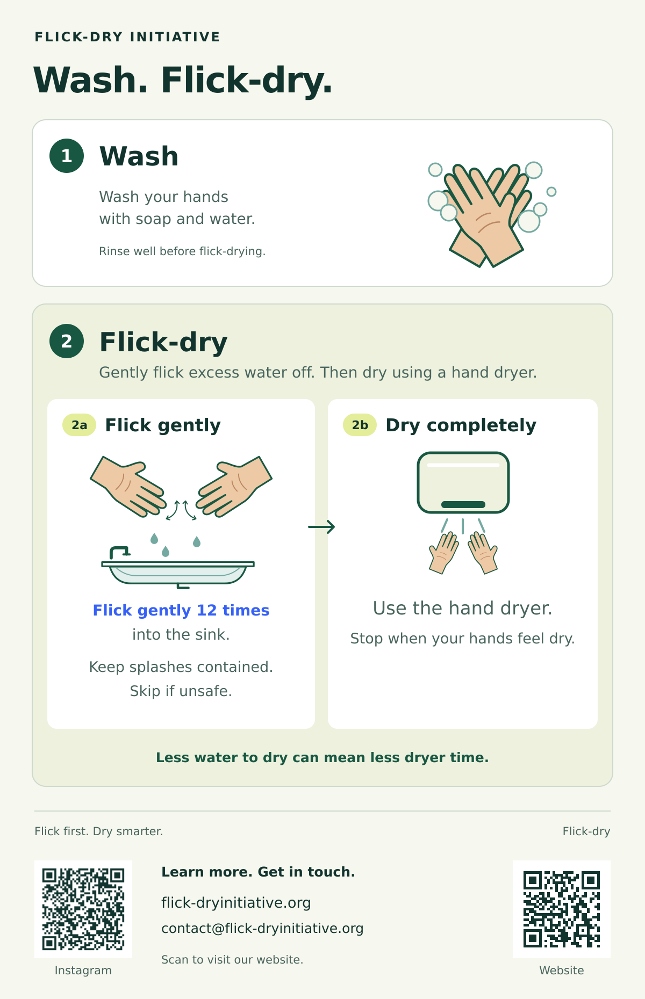
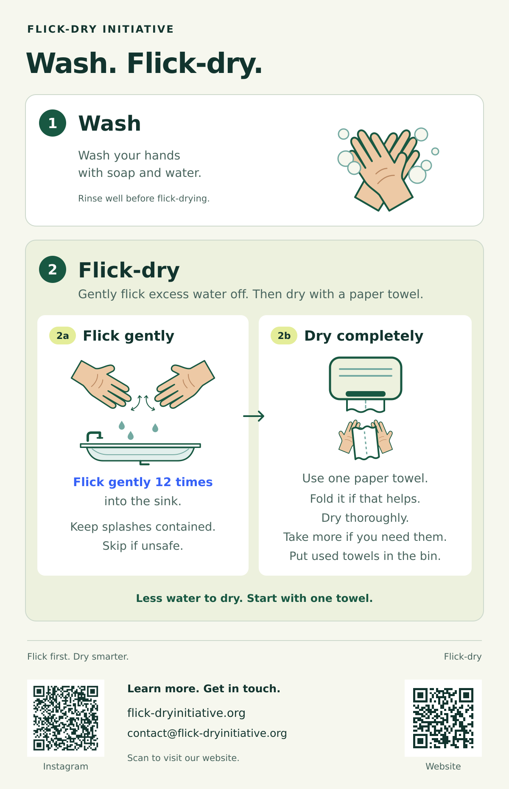

For washrooms
Print a Flick-dry sticker
Download the infographic that matches how people dry their hands in your washroom, and print it as a sticker.
Hand dryer
For washrooms with hand dryers.

Download hand-dryer infographic (PDF)Paper towels
For washrooms with paper towels.

Download paper-towel infographic (PDF)Has both?
If a washroom has both a hand dryer and paper towels, put the hand-dryer sticker near the dryer and the paper-towel sticker near the dispenser.
Prefer a printed sticker?
We can send one. Email us at contact@flick-dryinitiative.org and tell us which drying method your washroom uses: hand dryer, paper towels, or both.
Printing tips
- The sticker is 5 × 7.75 inches (12.7 × 19.7 cm). Print at actual size / 100%, not “fit to page”.
- Sticker paper or card stock lasts longest; regular letter paper works too.
- Put it up only with permission from the washroom’s owner or manager, somewhere near the sink, dryer, or paper-towel dispenser that stays dry.
Tell us where it is
Displaying it at your business, school, or community centre? Let us know and, with your permission, we will thank you on our Participating Organizations page.